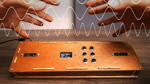

Hello! I am NAMBI AVINASH, an aspiring engineer in Electronics and Communication. I enjoy working on innovative projects related to coding, hardware, and AI.
1.Designed and built Theremidi, a musical instrument combining theremin principles with MIDI technology using Arduino.Integrated proximity sensors to detect hand movements and convert them into MIDI signals for real-time music production.
2.Implemented signal processing for accurate pitch and volume control, ensuring smooth performance.Demonstrated expertise in Arduino programming, sensor integration, and MIDI communication.
Participated in the Malware Analysis Hackathon 2024 at IIT Madras, conducted by Cystar. Analyzed and identified malware behaviors using reverse engineering and threat detection tools. Developed strategies to mitigate malware threats, showcasing expertise in cybersecurity techniques and tools. Collaborated in a team environment to present innovative solutions for real-world malware challenges.
Company: Essaar Electronics
Role: Intern - Motor Starters
Duration: April 2023 - May 2023
Experience:Worked on designing and implementing motor starters for industrial applications at Essar Electronics. Gained hands-on experience with electrical components, control circuits, and troubleshooting techniques.
Email: nambiavinash@gmail.com
Phone: +91-9361224728
LinkedIn: profile